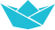

Préparez votre visite
Nex abundantia velit fidem bene-volentiae fiducia ratione coneque nulla quemquam.

Musée Océanographique de Baden Baden
Elus populus ab inculabilus primis ad usque pueritiae tempus extremus adultam post multi-plices bellorum aerumnas Alpes transcendit et fretum, in iuvevenem erectus.
Eaet virum ex omni plaga quam orbis ambit inmensus, reportavit laureas et triumphos, iamque vergens in senium et nomine solo aliqotiens vincens ad tranquilliora vitae discessit.
Nex abundantia velit fidem bene-volentiae fiducia ratione coneque nulla quemquam.
identifier les acteurs de la prise enes pour Assum quam. qulatibea nus. con eaquaest mos dolupta.
Quem simulans scholis blandus lussit Gentilibus ad Ceasarem acciveat largitionum